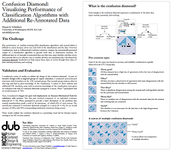

Visualizing Performance of Classification Algorithms with Additional Re-Annotated Data
Abstract
The performance of machine learning (ML) classification algorithms in an open-ended problem with manual labels is difficult to assess, because errors can exist both in the classification and the data. This poster introduces a new visualization, confusion diamond, that exposes both kinds of errors in the context of analyzing affect in chat logs of scientists studying supernovae. I present key design elements of this visualization, relevant usage scenarios, and findings from six semi-structured interviews and two task deployments on Amazon Mechanical Turk.
Validation
A series of studies were conducted to evaluate the design of the confusion diamond:
Survey 1: Validation of a single confusion diamondSurvey 2: Validation of a canvas of 15 confusion diamonds
The results from these studies validated the confusion diamond as a promising visual aid for domain experts seeking to use machine learning for data analysis.